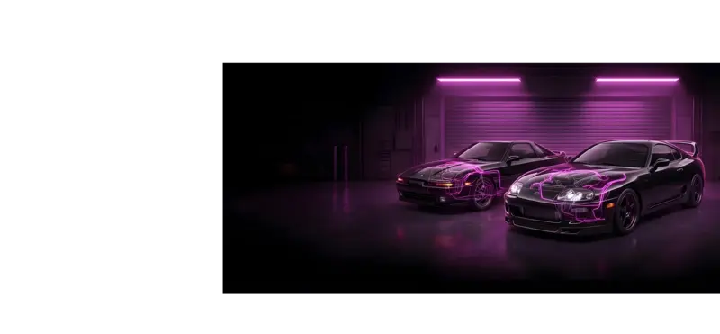

1UZ / 3UZ Power Steering Delete Kit
Fits 1UZ-FE & 3UZ-FE — SC400, LS400, GS400, and swap applications
Delete the power steering system from your 1UZ or 3UZ build with this clean, bolt-on kit. The billet aluminum bracket mounts in place of the power steering pump, holding an idler pulley to keep the accessory belt routing intact. A/C remains fully operational.
Perfect for track builds, engine swaps, and any build where eliminating the PS pump means a cleaner bay and one fewer hydraulic system to maintain.
- Billet aluminum bracket — mounts to OEM PS pump location
- Idler pulley included
- All mounting bolts and hardware included
- Optional accessory belt available — contact us for fitment
- A/C compressor remains fully functional
- Fits 1UZ-FE and 3UZ-FE engines
- Bolt-on installation — no fabrication required
What's Included
| Bracket | Billet aluminum — mounts to OEM PS pump location |
| Pulley | Idler pulley (included) |
| Hardware | All mounting bolts included |
| Belt | Optional — contact us for correct length |
| A/C | Retained — fully functional |
| Power Steering | Completely deleted |
| Compatible Engines | 1UZ-FE, 3UZ-FE |
| Compatible Chassis | Lexus SC400, LS400, GS400, and all 1UZ / 3UZ swap applications |
| Installation | Bolt-on, no fabrication required |
Have a question? Contact us before ordering.
Cleaner Bay. Less Hydraulic Complexity.
The 1UZ and 3UZ power steering pump adds hydraulic lines, a reservoir, and a constant load on the accessory drive. On swap builds and dedicated track cars this is weight and complexity you don't need. Deleting it with this billet bracket and idler setup keeps the belt routing clean, eliminates a potential leak point, and leaves your engine bay looking purpose-built. A/C stays on — you just lose the pump.